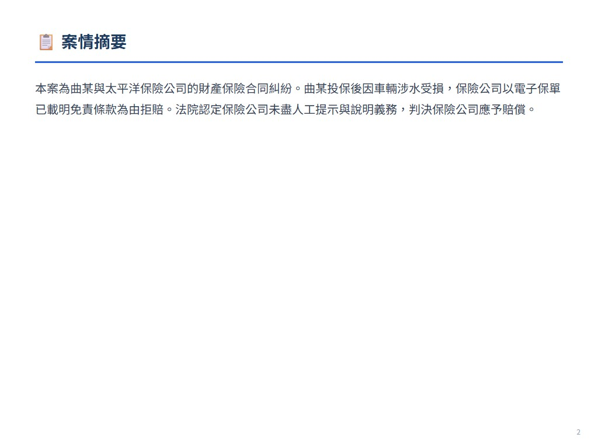
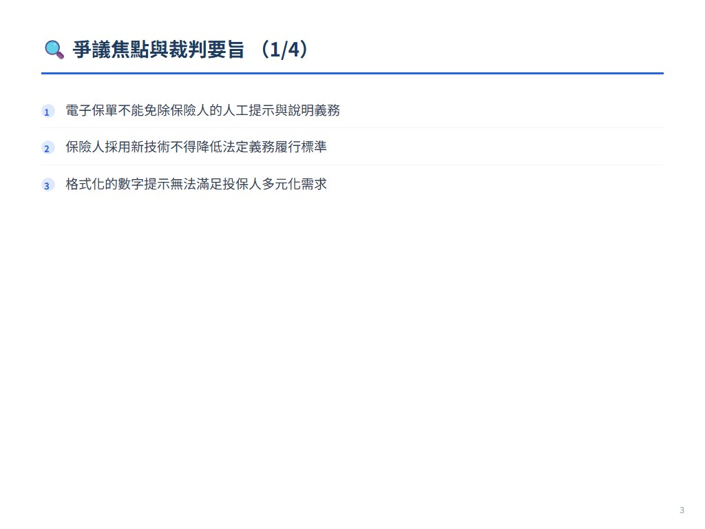
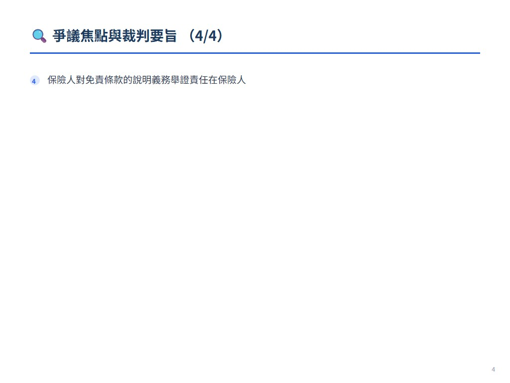
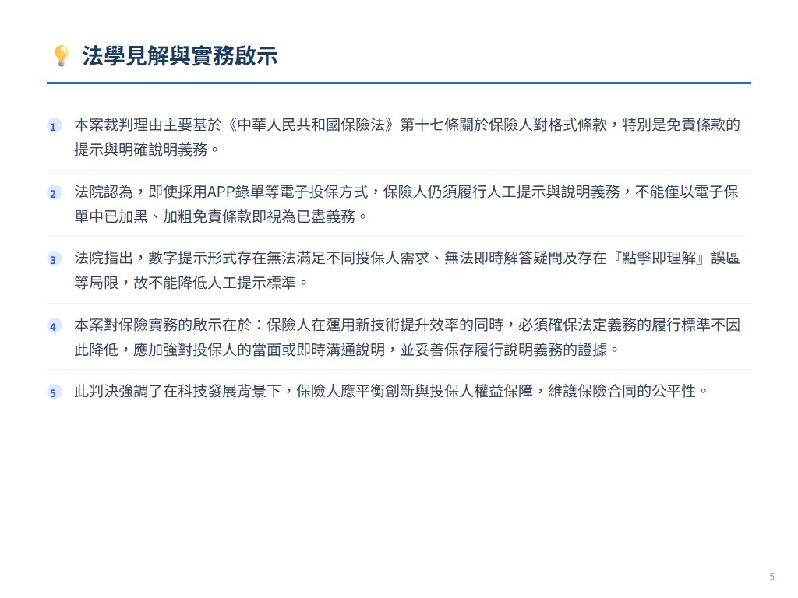
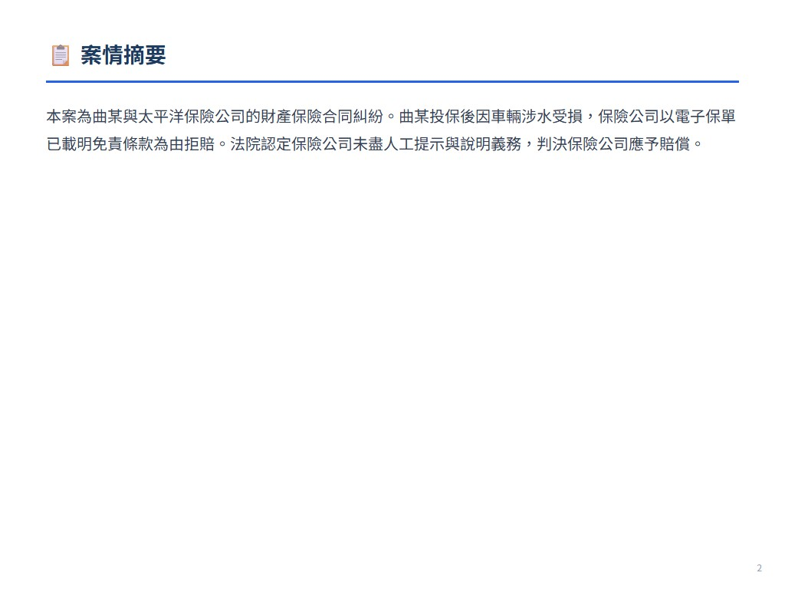
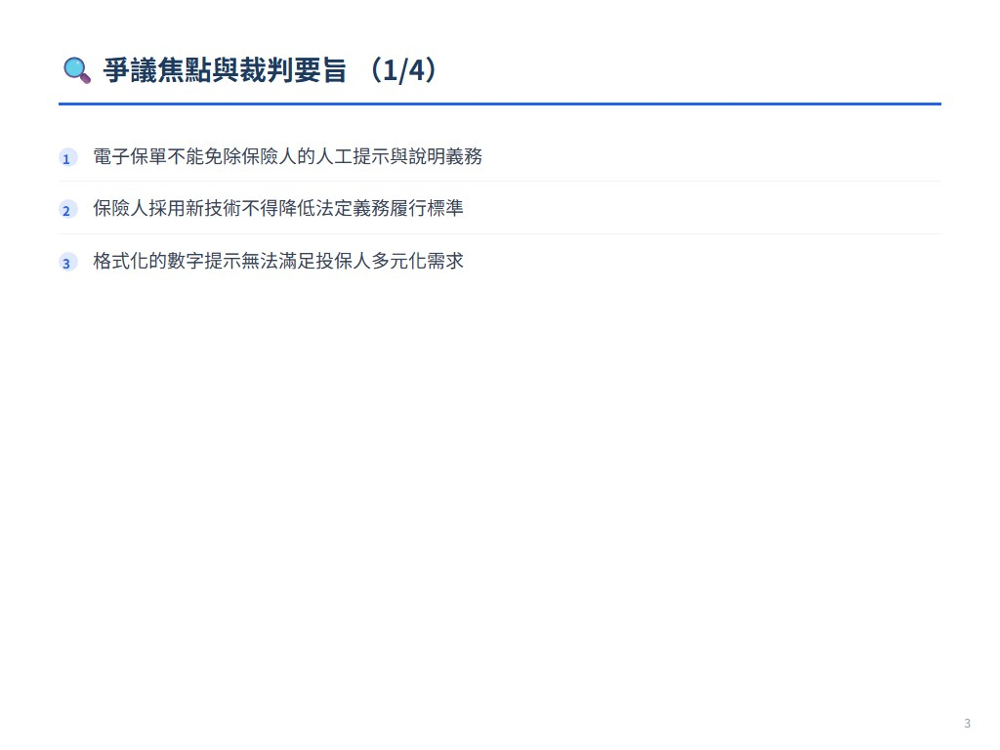
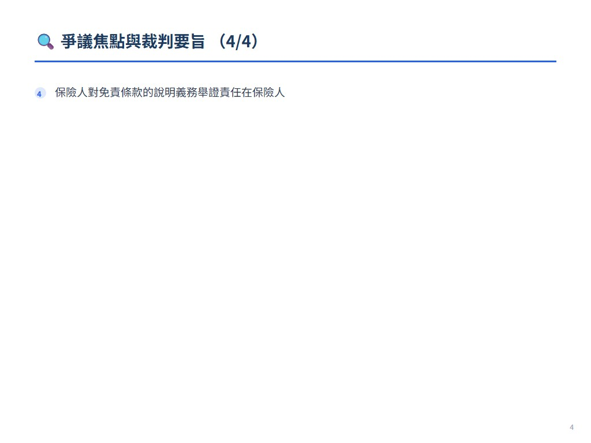
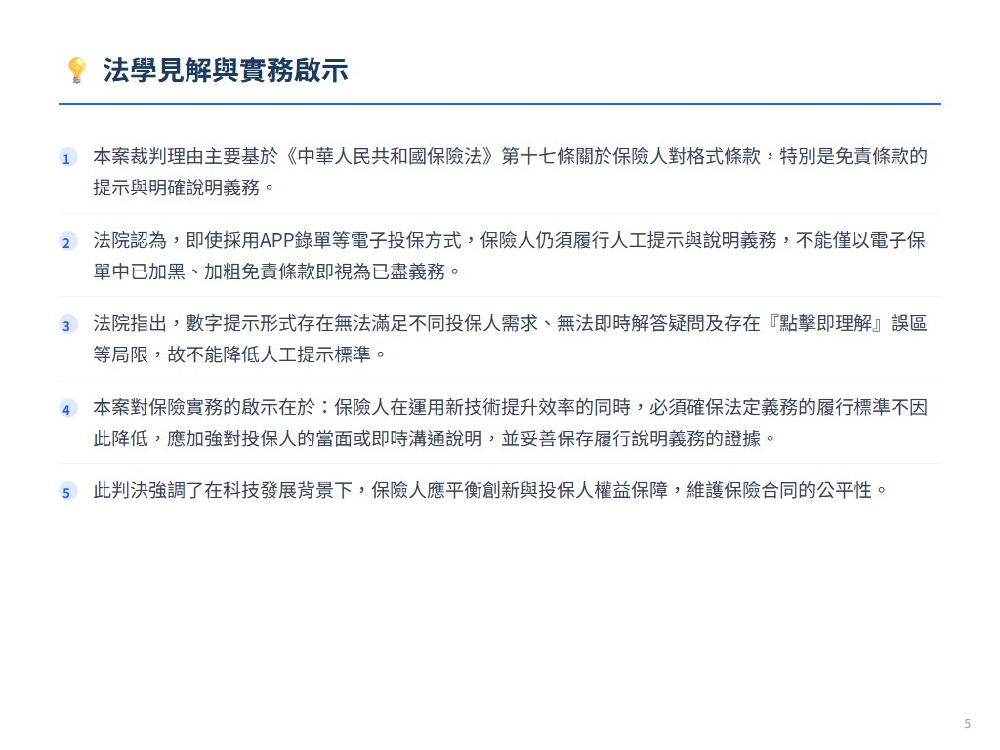

摘要
本案為曲某與太平洋保險公司的財產保險合同糾紛。曲某投保後因車輛涉水受損，保險公司以電子保單已載明免責條款為由拒賠。法院認定保險公司未盡人工提示與說明義務，判決保險公司應予賠償。
爭議焦點與裁判要旨
- 電子保單不能免除保險人的人工提示與說明義務
- 保險人採用新技術不得降低法定義務履行標準
- 格式化的數字提示無法滿足投保人多元化需求
- 保險人對免責條款的說明義務舉證責任在保險人
法學見解
本案裁判理由主要基於《中華人民共和國保險法》第十七條關於保險人對格式條款，特別是免責條款的提示與明確說明義務。法院認為，即使採用APP錄單等電子投保方式，保險人仍須履行人工提示與說明義務，不能僅以電子保單中已加黑、加粗免責條款即視為已盡義務。法院指出，數字提示形式存在無法滿足不同投保人需求、無法即時解答疑問及存在『點擊即理解』誤區等局限，故不能降低人工提示標準。本案對保險實務的啟示在於：保險人在運用新技術提升效率的同時，必須確保法定義務的履行標準不因此降低，應加強對投保人的當面或即時溝通說明，並妥善保存履行說明義務的證據。此判決強調了在科技發展背景下，保險人應平衡創新與投保人權益保障，維護保險合同的公平性。

 








展開案例評析
电子保单不能免除人工的提示与说明义务
來源：《中國法院2021年度案例》保險糾紛 原始文件：中国法院2021年度案例：保险纠纷.pdf 案號：北京市第一中级人民法院(2019)京01民终10869号民事判决书 案由：财产保险合同纠纷 當事人：曲某诉太平洋保险公司财产保险合同案
保险公司采取APP录单方式时， 电子保单不能免除人工的提示与说明义务——曲某诉太平洋保险公司财产保险合同案
案件基本信息
1.裁判书字号北京市第一中级人民法院(2019)京01民终10869号民事判决书 2.案由：财产保险合同纠纷 3.当事人原告（被上诉人）：曲某 被告（上诉人）：太平洋保险公司
基本案情
曲某系陕A××××机动车（以下简称涉案车辆）的所有权人。2017年9月1日，曲某作为被保险人向太平洋保险公司投保了机动车交通事故责任强制保险，同 时还投保了机动车综合商业保险，保险期间为2017年9月30日至2018年9月29日，承保险种有机动车损失保险，保险金额/赔偿限额为433100元，不计免赔。 2018年7月4日，临潼区出现大到暴雨天气。当日8时50分，曲某驾驶涉案车辆进入积水路段突然发生熄火。曲某随即报案并等待救援，支付施救费5000元。 后曲某将车辆拖至太原之星汽车销售服务有限公司进行定损，定损金额为343132.06元。2018年9月20日，太平洋保险公司对曲某出具《机动车保险拒赔
二、驳回曲某其他的诉讼请求。 太平洋保险公司不服，提起上诉。北京市第一中级人民法院经审理认为：就提示与明确说明义务，太平洋保险公司上诉主张因采用电子投保，且已在曲某投保过 程中向其释明，故不应承担本案赔偿责任。但法院认为，就太平洋保险公司已向曲某释明免责条款之主张，与在案证人证言不符，应不予采信。上诉人采用电子方式 经营，但不能因此降低其向被上诉人就免责条款予以提示与明确说明的义务。 北京市第一中级人民法院依照《中华人民共和国民事诉讼法》第一百七十条第一款第一项规定，判决如下： 驳回上诉，维持原判。
法官后语
随着互联网、大数据及人工智能的迅速发展，APP录单、电子投保及机器人客服指导投保日益成为互联网保险新方式，由此带来了投保方式便捷性与保险人说明 义务履行方式、投保人知情权保障的冲突。如何认定保险人说明义务中保险代理人职责的限度，在电子保单中已载明保险免责条款的前提下可否减轻保险人说明义务 的履行标准及举证责任分配，这个案例提供了一个重要的分析样本。 1.数字提示形式是否可以降低保险人人工提示和说明的标准订立保险合同，采用保险人提供的格式条款的，保险人向投保人提供的投保单 应当附格式条款，保险人应当向投保人说明合同的内容。在APP录单的投保方式中，电子保单已经就相关免责条款加黑、加粗说明。但根据投保人提供的证据，能 够确认投保人在购买保险时，保险人并未将相关的保险条款当面交付给投保人，也没有就相关免责条款向投保人当面进行明确的说明和提示。应当认定保险人未尽到 提示和说明义务，相应免责条款不产生效力，保险人拒赔事由不成立。 格式化的数字说明和提示形式，第一，无法满足不同投保人的多元化需求；第二，无法即时解答投保人的疑问；第三，存在“点击即理解”的误区，无法保证投 保人确实已对保险条款真正知晓。综上，数字提示形式不能作为保险人降低人工提示和说明的标准的理由。 2.保险人采用新技术与履行义务的关系伴随着保险人运用新技术不断暴露出的便捷性与义务履行标准降低之间相冲突
的问题，我们应探索鼓励保险人创新与保障投保人利益平衡点。在严格遵循司法过程的法律方法基础上，运用符合一定原则的价值判断，平衡各方冲突的利益，弥补 严格权利保护与社会创新发展需求的差距，实现规则适用与创新发展的有效统一。 在互联网、大数据及人工智能迅速发展的背景下，应鼓励保险人采取新技术降低运营成本，提高投保便捷性。然而，新技术的运用不能成为保险人降低法定义务 履行标准的理由，新技术应是保证保险人与投保人权利义务的平衡、共同利益最大化的手段。因此，司法在新技术挑战下，如何平衡鼓励保险人创新业务形式与投保 人权利保障，成为司法裁判满足法律效果与社会效果相统一的新维度。 综上，新技术不能免除保险人已方工作人员的专业性训练和履行义务的标准， 保险人采用新技术投入运营，一方面是为了降低运维成本，另一方面是为了便利投保人，扩大覆盖范围。然而，重要的是，新技术的运用应当成为保险人提高义务履 行标准，提高投保人权利保障力度的方式，保险人作为大型机构，也有人力、物力践行上述目标。随着人工智能、大数据的发展，相信越来越多的保险人、投保人与 被保险人的互动形式将产生，新型、疑难复杂的纠纷也会显现，而新型纠纷的争议解决方式也应当回归到公平第一、兼顾效率的立场。 编写人：北京市海淀区人民法院郝蓬秦鹏博